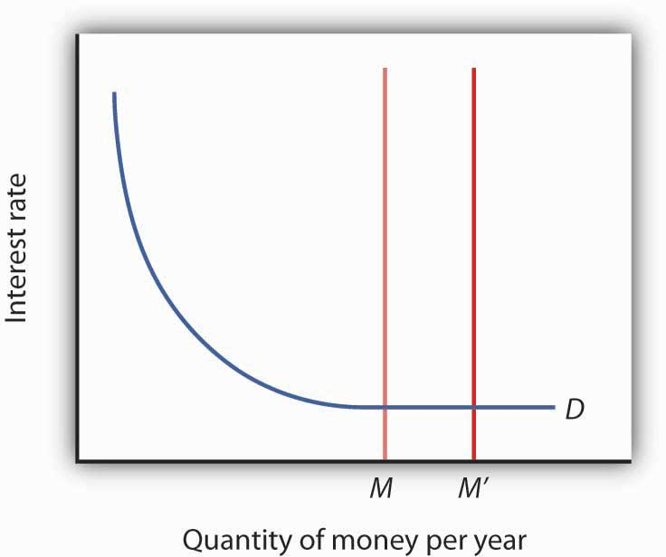
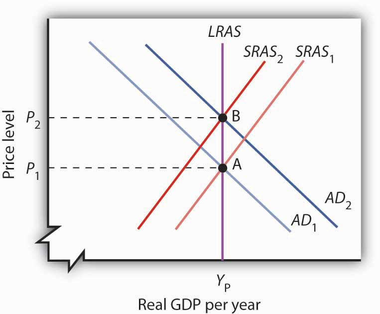

The Fed has some obvious advantages in its conduct of monetary policy. The two policy-making bodies, the Board of Governors and the Federal Open Market Committee (FOMC), are small and largely independent from other political institutions. These bodies can thus reach decisions quickly and implement them immediately. Their relative independence from the political process, together with the fact that they meet in secret, allows them to operate outside the glare of publicity that might otherwise be focused on bodies that wield such enormous power.
Despite the apparent ease with which the Fed can conduct monetary policy, it still faces difficulties in its efforts to stabilize the economy. We examine some of the problems and uncertainties associated with monetary policy in this section.
Perhaps the greatest obstacle facing the Fed, or any other central bank, is the problem of lags. It is easy enough to show a recessionary gap on a graph and then to show how monetary policy can shift aggregate demand and close the gap. In the real world, however, it may take several months before anyone even realizes that a particular macroeconomic problem is occurring. When monetary authorities become aware of a problem, they can act quickly to inject reserves into the system or to withdraw reserves from it. Once that is done, however, it may be a year or more before the action affects aggregate demand.
The delay between the time a macroeconomic problem arises and the time at which policy makers become aware of it is called a recognition lagThe delay between the time a macroeconomic problem arises and the time at which policy makers become aware of it.. The 1990–1991 recession, for example, began in July 1990. It was not until late October that members of the FOMC noticed a slowing in economic activity, which prompted a stimulative monetary policy. In contrast, the most recent recession began in December 2007, and Fed easing began in September 2007.
Recognition lags stem largely from problems in collecting economic data. First, data are available only after the conclusion of a particular period. Preliminary estimates of real GDP, for example, are released about a month after the end of a quarter. Thus, a change that occurs early in a quarter will not be reflected in the data until several months later. Second, estimates of economic indicators are subject to revision. The first estimates of real GDP in the third quarter of 1990, for example, showed it increasing. Not until several months had passed did revised estimates show that a recession had begun. And finally, different indicators can lead to different interpretations. Data on employment and retail sales might be pointing in one direction while data on housing starts and industrial production might be pointing in another. It is one thing to look back after a few years have elapsed and determine whether the economy was expanding or contracting. It is quite another to decipher changes in real GDP when one is right in the middle of events. Even in a world brimming with computer-generated data on the economy, recognition lags can be substantial.
Only after policy makers recognize there is a problem can they take action to deal with it. The delay between the time at which a problem is recognized and the time at which a policy to deal with it is enacted is called the implementation lagThe delay between the time at which a problem is recognized and the time at which a policy to deal with it is enacted.. For monetary policy changes, the implementation lag is quite short. The FOMC meets eight times per year, and its members may confer between meetings through conference calls. Once the FOMC determines that a policy change is in order, the required open-market operations to buy or sell federal bonds can be put into effect immediately.
Policy makers at the Fed still have to contend with the impact lagThe delay between the time a policy is enacted and the time that policy has its impact on the economy., the delay between the time a policy is enacted and the time that policy has its impact on the economy.
The impact lag for monetary policy occurs for several reasons. First, it takes some time for the deposit multiplier process to work itself out. The Fed can inject new reserves into the economy immediately, but the deposit expansion process of bank lending will need time to have its full effect on the money supply. Interest rates are affected immediately, but the money supply grows more slowly. Second, firms need some time to respond to the monetary policy with new investment spending—if they respond at all. Third, a monetary change is likely to affect the exchange rate, but that translates into a change in net exports only after some delay. Thus, the shift in the aggregate demand curve due to initial changes in investment and in net exports occurs after some delay. Finally, the multiplier process of an expenditure change takes time to unfold. It is only as incomes start to rise that consumption spending picks up.
The problem of lags suggests that monetary policy should respond not to statistical reports of economic conditions in the recent past but to conditions expected to exist in the future. In justifying the imposition of a contractionary monetary policy early in 1994, when the economy still had a recessionary gap, Greenspan indicated that the Fed expected a one-year impact lag. The policy initiated in 1994 was a response not to the economic conditions thought to exist at the time but to conditions expected to exist in 1995. When the Fed used contractionary policy in the middle of 1999, it argued that it was doing so to forestall a possible increase in inflation. When the Fed began easing in September 2007, it argued that it was doing so to forestall adverse effects to the economy of falling housing prices. In these examples, the Fed appeared to be looking forward. It must do so with information and forecasts that are far from perfect.
Estimates of the length of time required for the impact lag to work itself out range from six months to two years. Worse, the length of the lag can vary—when they take action, policy makers cannot know whether their choices will affect the economy within a few months or within a few years. Because of the uncertain length of the impact lag, efforts to stabilize the economy through monetary policy could be destabilizing. Suppose, for example, that the Fed responds to a recessionary gap with an expansionary policy but that by the time the policy begins to affect aggregate demand, the economy has already returned to potential GDP. The policy designed to correct a recessionary gap could create an inflationary gap. Similarly, a shift to a contractionary policy in response to an inflationary gap might not affect aggregate demand until after a self-correction process had already closed the gap. In that case, the policy could plunge the economy into a recession.
In attempting to manage the economy, on what macroeconomic variables should the Fed base its policies? It must have some target, or set of targets, that it wants to achieve. The failure of the economy to achieve one of the Fed’s targets would then trigger a shift in monetary policy. The choice of a target, or set of targets, is a crucial one for monetary policy. Possible targets include interest rates, money growth rates, and the price level or expected changes in the price level.
Interest rates, particularly the federal funds rate, played a key role in recent Fed policy. The FOMC does not decide to increase or decrease the money supply. Rather, it engages in operations to nudge the federal funds rate up or down.
Up until August 1997, it had instructed the trading desk at the New York Federal Reserve Bank to conduct open-market operations in a way that would either maintain, increase, or ease the current “degree of pressure” on the reserve positions of banks. That degree of pressure was reflected by the federal funds rate; if existing reserves were less than the amount banks wanted to hold, then the bidding for the available supply would send the federal funds rate up. If reserves were plentiful, then the federal funds rate would tend to decline. When the Fed increased the degree of pressure on reserves, it sold bonds, thus reducing the supply of reserves and increasing the federal funds rate. The Fed decreased the degree of pressure on reserves by buying bonds, thus injecting new reserves into the system and reducing the federal funds rate.
The current operating procedures of the Fed focus explicitly on interest rates. At each of its eight meetings during the year, the FOMC sets a specific target or target range for the federal funds rate. When the Fed lowers the target for the federal funds rate, it buys bonds. When it raises the target for the federal funds rate, it sells bonds.
Until 2000, the Fed was required to announce to Congress at the beginning of each year its target for money growth that year and each report dutifully did so. At the same time, the Fed report would mention that its money growth targets were benchmarks based on historical relationships rather than guides for policy. As soon as the legal requirement to report targets for money growth ended, the Fed stopped doing so. Since in recent years the Fed has placed more importance on the federal funds rate, it must adjust the money supply in order to move the federal funds rate to the level it desires. As a result, the money growth targets tended to fall by the wayside, even over the last decade in which they were being reported. Instead, as data on economic conditions unfolded, the Fed made, and continues to make, adjustments in order to affect the federal funds interest rate.
Some economists argue that the Fed’s primary goal should be price stability. If so, an obvious possible target is the price level itself. The Fed could target a particular price level or a particular rate of change in the price level and adjust its policies accordingly. If, for example, the Fed sought an inflation rate of 2%, then it could shift to a contractionary policy whenever the rate rose above 2%. One difficulty with such a policy, of course, is that the Fed would be responding to past economic conditions with policies that are not likely to affect the economy for a year or more. Another difficulty is that inflation could be rising when the economy is experiencing a recessionary gap. An example of this, mentioned earlier, occurred in 1990 when inflation increased due to the seemingly temporary increase in oil prices following Iraq’s invasion of Kuwait. The Fed faced a similar situation in the first half of 2008 when oil prices were again rising. If the Fed undertakes contractionary monetary policy at such times, then its efforts to reduce the inflation rate could worsen the recessionary gap.
The solution proposed by Chairman Bernanke, who is an advocate of inflation rate targeting, is to focus not on the past rate of inflation or even the current rate of inflation, but on the expected rate of inflation, as revealed by various indicators, over the next year.
By 2010, the central banks of about 30 developed or developing countries had adopted specific inflation targeting. Inflation targeters include Australia, Brazil, Canada, Great Britain, New Zealand, South Korea, and, most recently, Turkey and Indonesia. A study by economist Carl Walsh found that inflationary experiences among developed countries have been similar, regardless of whether their central banks had explicit or more flexible inflation targets. For developing countries, however, he found that inflation targeting enhanced macroeconomic performance, in terms of both lower inflation and greater overall stability.Carl E. Walsh, “Inflation Targeting: What Have We Learned?,” International Finance 12, no. 2 (2009): 195–233.
The institutional relationship between the leaders of the Fed and the executive and legislative branches of the federal government is structured to provide for the Fed’s independence. Members of the Board of Governors are appointed by the president, with confirmation by the Senate, but the 14-year terms of office provide a considerable degree of insulation from political pressure. A president exercises greater influence in the choice of the chairman of the Board of Governors; that appointment carries a four-year term. Neither the president nor Congress has any direct say over the selection of the presidents of Federal Reserve district banks. They are chosen by their individual boards of directors with the approval of the Board of Governors.
The degree of independence that central banks around the world have varies. A central bank is considered to be more independent if it is insulated from the government by such factors as longer term appointments of its governors and fewer requirements to finance government budget deficits. Studies in the 1980s and early 1990s showed that, in general, greater central bank independence was associated with lower average inflation and that there was no systematic relationship between central bank independence and other indicators of economic performance, such as real GDP growth or unemployment.See, for example, Alberto Alesina and Lawrence H. Summers, “Central Bank Independence and Macroeconomic Performance: Some Comparative Evidence,” Journal of Money, Credit, and Banking 25, no. 2 (May 1993): 151–62. By the rankings used in those studies, the Fed was considered quite independent, second only to Switzerland and the German Bundesbank at the time. Perhaps as a result of such findings, a number of countries have granted greater independence to their central banks in the last decade. The charter for the European Central Bank, which began operations in 1998, was modeled on that of the German Bundesbank. Its charter states explicitly that its primary objective is to maintain price stability. Also, since 1998, central bank independence has increased in the United Kingdom, Canada, Japan, and New Zealand.
While the Fed is formally insulated from the political process, the men and women who serve on the Board of Governors and the FOMC are human beings. They are not immune to the pressures that can be placed on them by members of Congress and by the president. The chairman of the Board of Governors meets regularly with the president and the executive staff and also reports to and meets with congressional committees that deal with economic matters.
The Fed was created by the Congress; its charter could be altered—or even revoked—by that same body. The Fed is in the somewhat paradoxical situation of having to cooperate with the legislative and executive branches in order to preserve its independence.
The problem of lags suggests that the Fed does not know with certainty when its policies will work their way through the financial system to have an impact on macroeconomic performance. The Fed also does not know with certainty to what extent its policy decisions will affect the macroeconomy.
For example, investment can be particularly volatile. An effort by the Fed to reduce aggregate demand in the face of an inflationary gap could be partially offset by rising investment demand. But, generally, contractionary policies do tend to slow down the economy as if the Fed were “pulling on a rope.” That may not be the case with expansionary policies. Since investment depends crucially on expectations about the future, business leaders must be optimistic about economic conditions in order to expand production facilities and buy new equipment. That optimism might not exist in a recession. Instead, the pessimism that might prevail during an economic slump could prevent lower interest rates from stimulating investment. An effort to stimulate the economy through monetary policy could be like “pushing on a string.” The central bank could push with great force by buying bonds and engaging in quantitative easing, but little might happen to the economy at the other end of the string.
What if the Fed cannot bring about a change in interest rates? A liquidity trapSituation that exists when a change in monetary policy has no effect on interest rates. is said to exist when a change in monetary policy has no effect on interest rates. This would be the case if the money demand curve were horizontal at some interest rate, as shown in Figure 26.4 "A Liquidity Trap". If a change in the money supply from M to M′ cannot change interest rates, then, unless there is some other change in the economy, there is no reason for investment or any other component of aggregate demand to change. Hence, traditional monetary policy is rendered totally ineffective; its degree of impact on the economy is nil. At an interest rate of zero, since bonds cease to be an attractive alternative to money, which is at least useful for transactions purposes, there would be a liquidity trap.
Figure 26.4 A Liquidity Trap
When a change in the money supply has no effect on the interest rate, the economy is said to be in a liquidity trap.
With the federal funds rate in the United States close to zero at the end of 2008, the possibility that the country was in or nearly in a liquidity trap could not be dismissed. As discussed in the introduction to the chapter, at the same time the Fed lowered the federal funds rate to close to zero, it mentioned that it intended to pursue additional, nontraditional measures. What the Fed seeks to do is to make firms and consumers want to spend now by using a tool not aimed at reducing the interest rate, since it cannot reduce the interest rate below zero. It thus shifts its focus to the price level and to avoiding expected deflation. For example, if the public expects the price level to fall by 2% and the interest rate is zero, by holding money, the money is actually earning a positive real interest rate of 2%—the difference between the nominal interest rate and the expected deflation rate. Since the nominal rate of interest cannot fall below zero (Who would, for example, want to lend at an interest rate below zero when lending is risky whereas cash is not? In short, it does not make sense to lend $10 and get less than $10 back.), expected deflation makes holding cash very attractive and discourages spending since people will put off purchases because goods and services are expected to get cheaper.
To combat this “wait-and-see” mentality, the Fed or another central bank, using a strategy referred to as quantitative easingPolicy in which a bank convinces the public that it will keep interest rates very low by providing substantial reserves for as long as is necessary to avoid deflation., must convince the public that it will keep interest rates very low by providing substantial reserves for as long as is necessary to avoid deflation. In other words, it is aimed at creating expected inflation. For example, at the Fed’s October 2003 meeting, it announced that it would keep the federal funds rate at 1% for “a considerable period.” When the Fed lowered the rate to between 0% and 0.25% in December 2008, it added that “the committee anticipates that weak economic conditions are likely to warrant exceptionally low levels of the federal funds rate for some time.” After working so hard to convince economic players that it will not tolerate inflation above 2%, the Fed, when in such a situation, must convince the public that it will tolerate inflation, but of course not too much! If it is successful, this extraordinary form of expansionary monetary policy will lead to increased purchases of goods and services, compared to what they would have been with expected deflation. Also, by providing banks with lots of liquidity, the Fed is hoping to encourage them to lend.
The Japanese economy provides an interesting modern example of a country that attempted quantitative easing. With a recessionary gap starting in the early 1990s and deflation in most years from 1995 on, Japan’s central bank, the Bank of Japan, began to lower the call money rate (equivalent to the federal funds rate in the United States), reaching near zero by the late 1990s. With growth still languishing, Japan appeared to be in a traditional liquidity trap. In late 1999, the Bank of Japan announced that it would maintain a zero interest rate policy for the foreseeable future, and in March 2001 it officially began a policy of quantitative easing. In 2006, with the price level rising modestly, Japan ended quantitative easing and began increasing the call rate again. It should be noted that the government simultaneously engaged in expansionary fiscal policy.
How well did these policies work in Japan? The economy began to grow modestly in 2003, though deflation between 1% and 2% remained. Some researchers feel that the Bank of Japan ended quantitative easing too early. Also, delays in implementing the policy, as well as delays in restructuring the banking sector, exacerbated Japan’s problems.“Bringing an End to Deflation under the New Monetary Policy Framework,” OECD Economic Surveys: Japan 2008 4 (April 2008): 49–61 and Mark M. Spiegel, “Did Quantitative Easing by the Bank of Japan Work?” FRBSF Economic Letter 2006, no. 28 (October 20, 2006): 1–3.
Fed Chairman Bernanke and other Fed officials have argued that the Fed is also engaged in credit easing.Ben S. Bernanke, “The Crisis and the Policy Response” (Stamp Lecture, London School of Economics, London, England, January 13, 2009) and Janet L. Yellen, “U.S. Monetary Policy Objectives in the Short Run and the Long Run” (speech, Allied Social Sciences Association annual meeting, San Francisco, California, January 4, 2009). Credit easingA strategy that involves the extension of central bank lending to influence more broadly the proper functioning of credit markets and to improve liquidity. is a strategy that involves the extension of central bank lending to influence more broadly the proper functioning of credit markets and to improve liquidity. The specific new credit facilities that the Fed has created were discussed in the Case in Point in the chapter on the nature and creation of money. In general, the Fed is hoping that these new credit facilities will improve liquidity in a variety of credit markets, ranging from those used by money market mutual funds to those involved in student and car loans.
One hypothesis suggests that monetary policy may affect the price level but not real GDP. The rational expectations hypothesisIndividuals form expectations about the future based on the information available to them, and they act on those expectations. states that people use all available information to make forecasts about future economic activity and the price level, and they adjust their behavior to these forecasts.
Figure 26.5 "Monetary Policy and Rational Expectations" uses the model of aggregate demand and aggregate supply to show the implications of the rational expectations argument for monetary policy. Suppose the economy is operating at YP, as illustrated by point A. An increase in the money supply boosts aggregate demand to AD2. In the analysis we have explored thus far, the shift in aggregate demand would move the economy to a higher level of real GDP and create an inflationary gap. That, in turn, would put upward pressure on wages and other prices, shifting the short-run aggregate supply curve to SRAS2 and moving the economy to point B, closing the inflationary gap in the long run. The rational expectations hypothesis, however, suggests a quite different interpretation.
Figure 26.5 Monetary Policy and Rational Expectations
Suppose the economy is operating at point A and that individuals have rational expectations. They calculate that an expansionary monetary policy undertaken at price level P1 will raise prices to P2. They adjust their expectations—and wage demands—accordingly, quickly shifting the short-run aggregate supply curve to SRAS2. The result is a movement along the long-run aggregate supply curve LRAS to point B, with no change in real GDP.
Suppose people observe the initial monetary policy change undertaken when the economy is at point A and calculate that the increase in the money supply will ultimately drive the price level up to point B. Anticipating this change in prices, people adjust their behavior. For example, if the increase in the price level from P1 to P2 is a 10% change, workers will anticipate that the prices they pay will rise 10%, and they will demand 10% higher wages. Their employers, anticipating that the prices they will receive will also rise, will agree to pay those higher wages. As nominal wages increase, the short-run aggregate supply curve immediately shifts to SRAS2. The result is an upward movement along the long-run aggregate supply curve, LRAS. There is no change in real GDP. The monetary policy has no effect, other than its impact on the price level. This rational expectations argument relies on wages and prices being sufficiently flexible—not sticky, as described in an earlier chapter—so that the change in expectations will allow the short-run aggregate supply curve to shift quickly to SRAS2.
One important implication of the rational expectations argument is that a contractionary monetary policy could be painless. Suppose the economy is at point B in Figure 26.5 "Monetary Policy and Rational Expectations", and the Fed reduces the money supply in order to shift the aggregate demand curve back to AD1. In the model of aggregate demand and aggregate supply, the result would be a recession. But in a rational expectations world, people’s expectations change, the short-run aggregate supply immediately shifts to the right, and the economy moves painlessly down its long-run aggregate supply curve LRAS to point A. Those who support the rational expectations hypothesis, however, also tend to argue that monetary policy should not be used as a tool of stabilization policy.
For some, the events of the early 1980s weakened support for the rational expectations hypothesis; for others, those same events strengthened support for this hypothesis. As we saw in the introduction to an earlier chapter, in 1979 President Jimmy Carter appointed Paul Volcker as Chairman of the Federal Reserve and pledged his full support for whatever the Fed might do to contain inflation. Mr. Volcker made it clear that the Fed was going to slow money growth and boost interest rates. He acknowledged that this policy would have costs but said that the Fed would stick to it as long as necessary to control inflation. Here was a monetary policy that was clearly announced and carried out as advertised. But the policy brought on the most severe recession since the Great Depression—a result that seems inconsistent with the rational expectations argument that changing expectations would prevent such a policy from having a substantial effect on real GDP.
Others, however, argue that people were aware of the Fed’s pronouncements but were skeptical about whether the anti-inflation effort would persist, since the Fed had not vigorously fought inflation in the late 1960s and the 1970s. Against this history, people adjusted their estimates of inflation downward slowly. In essence, the recession occurred because people were surprised that the Fed was serious about fighting inflation.
Regardless of where one stands on this debate, one message does seem clear: once the Fed has proved it is serious about maintaining price stability, doing so in the future gets easier. To put this in concrete terms, Volcker’s fight made Greenspan’s work easier, and Greenspan’s legacy of low inflation should make Bernanke’s easier.
The scenarios below describe the U.S. recession and recovery in the early 1990s. Identify the lag that may have contributed to the difficulty in using monetary policy as a tool of economic stabilization.
In the spring of 2011, the European Central Bank (ECB) began to raise interest rates, while the Federal Reserve Bank held fast to its low rate policy. With the economies of both Europe and the United States weak, why the split in direction?
For one thing, at the time, the U.S. economy looked weaker than did Europe’s economy as a whole. Moreover, the recession in the United States had been deeper. For example, the unemployment rate in the United States more than doubled during the Great Recession and its aftermath, while in the eurozone, it had risen only 40%.
But the divergence also reflected the different legal environments in which the two central banks operate. The ECB has a clear mandate to fight inflation, while the Fed has more leeway in pursuing both price stability and full employment. The ECB has a specific inflation target, and the inflation measure it uses covers all prices. The Fed, with its more flexible inflation target, has tended to focus on “core” inflation, which excludes gasoline and food prices, both of which are apt to be volatile. Using each central bank’s preferred inflation measure, European inflation was, at the time of the ECB rate hike, running at 2.6%, while in the United States, it was at 1.6%.
Europe also differs from the United States in its degree of unionization. Because of Europe’s higher level of unionization and collective bargaining, there is a sense that any price increases in Europe will translate into sustained inflation more rapidly there than they will in the United States.
Recall, however, that the eurozone is made up of 17 diverse countries. As made evident by the headline news from most of 2011 and into 2012, a number of countries in the eurozone were experiencing sovereign debt crises (meaning that there was fear that their governments could not meet their debt obligations) as well as more severe economic conditions. Higher interest rates make their circumstances that much more difficult. While it is true that various states in the United States can experience very different economic circumstances when the Fed sets what is essentially a “national” monetary policy, having a single monetary policy for different countries presents additional problems. One reason for this this difference is that labor mobility is higher in the United States than it is across the countries of Europe. Also, the United States can use its “national” fiscal policy to help weaker states.
In the fall of 2011, the ECB reversed course. At its first meeting under its new president, Mario Draghi, in November 2011, it lowered rates, citing slower growth and growing concerns about the sovereign debt crisis. A further rate cut followed in December. Interestingly, the inflation rate at the time of the cuts was running at about 3%, which was above the ECB’s stated goal of 2%. The ECB argued that it was forecasting lower inflation for the future. So even the ECB has some flexibility and room for discretion.
Sources: Emily Kaiser and Mark Felsenthal, “Seven Reasons Why the Fed Won’t Follow the ECB,” Reuters Business and Financial News, April 7, 2011, available http://www.reuters.com/article/2011/04/07/us-usa-fed-ecb-idUSTRE73663420110407; David Mchugh, “ECB Cuts Key Rate a Quarter Point to Help Economy,” USA Today, December 8, 2011, available http://www.usatoday.com/money/economy/story/2011-12-08/ecb-rate-cut/51733442/1; Fernanda Nechio, “Monetary Policy When One Size Does Not Fit All,” Federal Reserve Bank of San Francisco Economic Letter, June 13, 2011.